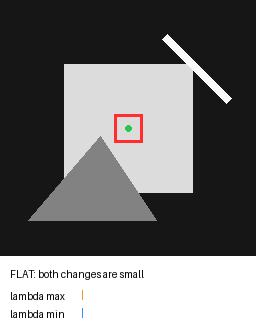
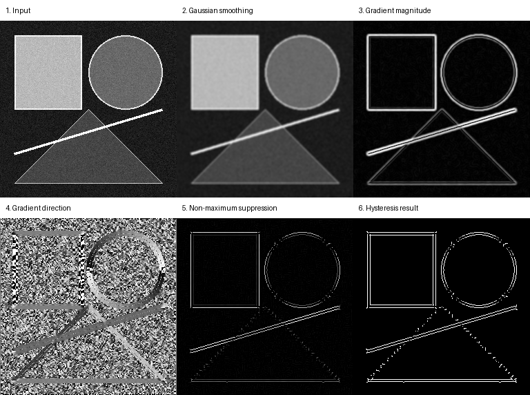
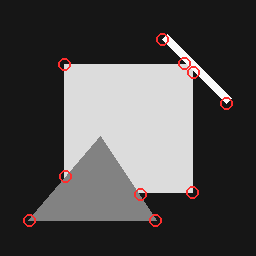

实验 01
3×3 卷积计算器
修改像素或卷积核。计算器会先翻转卷积核，再执行逐元素乘积求和，与仓库中的数学卷积定义一致。
中心输出
210
5×50 − 4×10
FROM PIXELS TO AUTONOMY
从卷积、边缘和角点开始，用可交互实验建立视觉直觉，最终走向自动驾驶感知。

LEARNING PATH
每一步都解释它依赖什么，以及它将怎样用于自动驾驶。
INTERACTIVE LABS
所有交互都在浏览器本地运行，不上传图片，也不需要后端服务。
实验 01
修改像素或卷积核。计算器会先翻转卷积核，再执行逐元素乘积求和，与仓库中的数学卷积定义一致。

1 / 6 · 输入图像
实验 03
选择局部区域，比较两个主方向上的变化。两个特征值同时较大，才是稳定角点。
两个方向都缺少明显亮度变化，窗口移动后几乎不变。

小 / 小 → 平坦区域